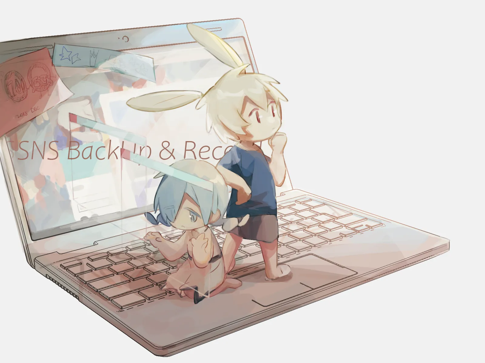

前言
感谢来访～
这里是Mazui3的个人博客.
中之人
笔名是Mazui,称呼是麻醉.老熟人也叫我里约.
普通社会新人.驱动力是99%的兴趣和1%的承诺.
五分钟热度,有丰富的搞事与同样丰富的搞事失败经验.
某个post讲了关于博主名字的来源和两位形象的设定->麻醉和里约.
这个博客的使用准则
如果把其他使用平台比作餐厅的话,这里可以理解成餐厅后仓库一样的存在.
博客的内容杂乱,更新并不是以给观众看为出发点.
这份博客零零散散甚至包括了2013年开始的内容.
自己不会记得那么多事,博客更像在备份熟悉的陌生人,过去【名为自己】的存在.
准则
- 内容包括并不限于自己的 画,生活,笔记和唠嗑 .
- 转载禁止. 图片的保存ok 任何使用不可.
- 博主是普通人,在各种意想不到的地方都可以有错误,请自己加以辨别,见谅.
使用
电脑的左侧 以及 手机的上方 是博客的页面栏.
评论系统为disqus.添加无登陆点赞/评论,需要翻墙.
关于oc及oc tag
博客里的设定并不是【发布用】设定,可以当作本家同人来看.
以下两篇文章分别是【会当作故事对待】的oc tag整理和【未成形点子】oc草稿导航.
博主请问有系统的oc故事介绍吗.
还真没有.
能见人的发图书馆了.
不能见人的散布在github上锁repo和notion笔记中.
在讨论“想要实现的事物”之前,有生存需求.无论是物理意义上的,还是精神自由上的.
但世界就是这样的吧?
不知道其他人是怎么样的.
分享自己的作品,对我来说像上到舞台上向着观众展示.
展示结束了,我还是会回到舞台下,在人海中没有特别.
舞台上的我,是曾经的我,跟现在的我无关.
这样就可以也足够了.
这里是我记录所有的我的地方.
谢谢阅览,祝你生活平安.
图：oversleep twi